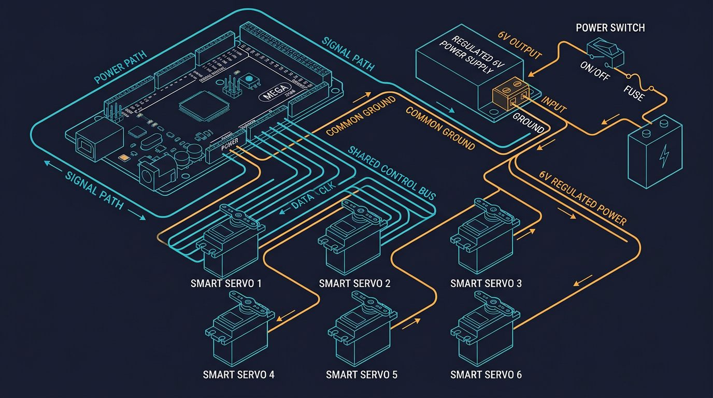

What this tutorial covers
What you can realistically build
A 6-DOF Arduino robot arm is a useful educational platform for learning kinematics, servo control, CAD and 3D printing. This tutorial targets a lightweight desktop arm that moves small objects slowly. It is not an industrial robot and should not be used for lifting people, sharp tools, hazardous materials or unattended production.
The design uses six position-controlled servos: base yaw, shoulder pitch, elbow pitch, wrist pitch, wrist yaw and wrist roll. A gripper can be driven by the wrist-roll channel only if the mechanical design allows it; otherwise use a seventh actuator or replace one wrist axis. Define this detail before ordering parts because "six axes" and "six actuators plus a gripper" are not always the same thing — I ordered servos for my first build before deciding this and ended up short one channel on the driver board.
6-DOF robot arm architecture
Degrees of freedom describe independent motion variables, not the number of visible links. A common serial chain is:
| Joint | Motion | Main design concern |
|---|---|---|
| J1 base | Yaw around the vertical axis | Base stability and bearing load |
| J2 shoulder | Raises the upper arm | Highest torque in most desktop arms |
| J3 elbow | Folds the forearm | Gear or belt backlash |
| J4 wrist pitch | Tilts the tool | Motor weight and cable routing |
| J5 wrist yaw | Rotates tool orientation | Limited range and collisions |
| J6 wrist roll | Spins the tool axis | Slip, wires and end-effector mounting |
Keep the shoulder and elbow links short in the first prototype. Torque falls quickly as the center of mass moves farther from a joint. A compact arm is easier to calibrate and less likely to skip or brown out its servos.
Components, servos and power
- Arduino Mega 2560 or another board with enough I/O and memory for your control software.
- PCA9685 16-channel, 12-bit servo driver for stable PWM generation over I2C.
- Six metal-gear positional servos sized for the calculated torque, not merely the arm's weight.
- Separate regulated servo supply matched to the servo voltage and peak current.
- 3D-printed links, bearings, shafts, fasteners and a rigid base.
- Emergency stop or power switch that disconnects servo power during testing.
- Optional limit switches, current monitor and external encoder feedback.
The Arduino should provide control signals, not servo power. Six servos can draw a large current during acceleration or when several joints stall. Use a supply with current margin, a fuse, short low-resistance wiring and a common ground between the Arduino and servo supply. Add bulk capacitance near the servo rail according to the power-supply manufacturer's recommendations.
Designing and printing the arm
Estimate torque before printing
For a static first estimate, use torque = mass × 9.81 × distance. A 0.6 kg load whose center of mass is 0.16 m from the shoulder creates about 0.94 N·m before acceleration, friction and safety margin. Select a servo with substantially more rated torque than that result; a practical prototype should include at least a 1.5–2× margin, and dynamic applications may require more.
Manufacturers often quote stall torque, not a safe continuous operating torque. Do not design a mechanism that holds a servo near stall for long periods. A gearbox can increase output torque, but it introduces backlash, friction and lower speed.
Print for stiffness
Use multiple perimeters, adequate wall thickness and ribs around bearing seats. Orient layers so the main bending load does not try to split the part along the layer lines. PLA is stiff and easy to print; PETG is tougher and more heat tolerant but can flex more. Neither material should be treated as a substitute for a metal safety guard.
Control backlash
Use two supported bearings where a joint carries a long link, align shafts carefully and avoid letting the servo spline carry the entire radial load. Belt tension should remove slack without overloading bearings. Measure repeatability in both directions because backlash may be invisible when the arm approaches a target from only one direction.
Servo driver wiring
With a PCA9685, connect SDA and SCL to the Arduino Mega I2C pins, connect logic power as specified by the board, and connect the servo supply to the driver's V+ and GND terminals. The Arduino ground, PCA9685 logic ground and servo-supply ground must share a reference. The servo supply must never be routed through the Arduino regulator.
- Disconnect power before inserting or removing a servo plug.
- Confirm the connector orientation: ground, power and signal are not universal across every servo brand.
- Set the PCA9685 frequency to the servo manufacturer's specified refresh rate, commonly around 50 Hz for hobby servos.
- Test one servo at a time with the link removed.
- Install mechanical stops or software limits before attaching the arm.
Keep signal wires away from high-current motor or servo wiring where possible. If the arm resets when several servos move, measure the supply at the driver while moving rather than trusting the no-load voltage.
Calibration, neutral positions and homing
Servo pulse widths are not identical across brands. A nominal 0–180° command may not correspond to the same mechanical range, and driving beyond a joint's safe angle can strip gears. Create a calibration record for every joint with neutral pulse, minimum pulse, maximum pulse and mechanical direction.
- Remove the links or disconnect the load.
- Command a conservative neutral position, such as 90°.
- Mount each horn at the closest possible mechanical center.
- Move in small increments until the usable limits are found without buzzing or binding.
- Record those limits in software and never command outside them.
- Repeat under a light load and check that the servo does not overheat.
Hobby servos generally do not report their actual angle. The commanded angle is therefore an estimate. If repeatability matters, add absolute or incremental encoders and calibrate the complete mechanism, not just the servo.
Arduino control example
The following sketch uses the Adafruit PCA9685 library and moves six channels to defined angles. It deliberately uses conservative limits and a slow demonstration sequence. Replace the limits with measurements from your own joints.
#include <Wire.h>
#include <Adafruit_PWMServoDriver.h>
Adafruit_PWMServoDriver pwm(0x40);
const uint16_t SERVO_MIN = 110; // calibrate for your servo
const uint16_t SERVO_MAX = 510; // calibrate for your servo
const uint8_t jointMin[6] = {20, 35, 25, 30, 35, 20};
const uint8_t jointMax[6] = {160, 145, 155, 150, 145, 160};
uint16_t angleToPulse(uint8_t joint, int angle) {
angle = constrain(angle, jointMin[joint], jointMax[joint]);
return map(angle, 0, 180, SERVO_MIN, SERVO_MAX);
}
void setJoint(uint8_t joint, int angle) {
if (joint < 6) pwm.setPWM(joint, 0, angleToPulse(joint, angle));
}
void setup() {
pwm.begin();
pwm.setOscillatorFrequency(25000000); // verify for your board
pwm.setPWMFreq(50); // typical analog servo rate
delay(300);
for (uint8_t j = 0; j < 6; ++j) setJoint(j, 90);
}
void loop() {
setJoint(1, 65); // shoulder
setJoint(2, 115); // elbow
delay(900);
setJoint(1, 90);
setJoint(2, 90);
delay(900);
}Install the Adafruit PWM Servo Driver Library from the Arduino Library Manager. The pulse range is hardware-dependent; the example values are not universal. If a servo buzzes at a limit, stop immediately and reduce the range. For smooth coordinated movement, replace blocking delays with a non-blocking trajectory planner that updates all joints at a controlled rate.
Inverse kinematics for a 6-DOF arm
Inverse kinematics (IK) converts a desired tool position and orientation into joint angles. A full 6-DOF solver needs the link dimensions, joint axes, angle offsets and limits. The same target can have multiple solutions, and some poses are unreachable or close to a singularity.
For a first prototype, solve the base, shoulder and elbow position in a vertical plane, then assign the wrist angles to match the desired tool orientation. Let r = sqrt(x² + y²) and let z' be the target height after subtracting the base height. For upper-arm length L1 and forearm length L2, the elbow angle can be computed with the law of cosines:
cos(q3) = (r² + z'² − L1² − L2²) / (2 L1 L2)
Clamp the cosine value to −1…1 before calling an inverse cosine, because floating-point rounding can produce a value slightly outside that range. Choose elbow-up or elbow-down consistently, reject targets outside the workspace and apply servo limits after converting radians to degrees.
Troubleshooting table
| Symptom | Likely cause | What to check |
|---|---|---|
| Arduino resets | Servo supply sag or shared USB power | Measure V+ during motion; use a separate regulated supply and common ground. |
| Servo buzzes at rest | Limit, load or pulse range is wrong | Remove the link, lower the limit and verify the servo's pulse specification. |
| Arm misses position | Backlash, flex or insufficient torque | Approach from both directions, reinforce the link and recalculate torque. |
| Only some channels move | I2C address, wiring or library issue | Scan the I2C bus, confirm SDA/SCL and test one channel. |
| Motion is jerky | Instantaneous angle changes or inadequate supply | Use a ramped trajectory and inspect voltage under load. |
| IK gives NaN | Target outside workspace or un-clamped cosine | Check reachability and clamp the law-of-cosines argument. |
The reset-on-motion row is the failure that appears most often when six servos share a USB-powered rail. Measure the servo supply during motion before changing code.
Safety and responsible use
Keep fingers clear of joints, gears and the gripper. Test without a payload, then with a light object, and remain near the power switch. A 3D-printed arm can fail suddenly if a layer delaminates or a fastener loosens. Add physical stops, current protection and an emergency power disconnect before increasing speed.
This design is for education and prototyping. Industrial deployment requires a risk assessment, guarding, emergency-stop architecture, validated safety functions and compliance with applicable local standards. Do not present an open-frame hobby arm as compliant industrial machinery.
Final thoughts
Building a 6-DOF Arduino robot arm is one of the most complete beginner-to-intermediate robotics projects: it combines mechanical design, electrical power planning, embedded programming and applied mathematics in a single build. The most common failures are not in the code but in underestimated torque, shared power rails and skipped calibration steps. Start with a short, rigid arm, validate each joint individually, and only then move on to full inverse kinematics and coordinated motion.
Frequently asked questions
Can an Arduino Mega power six servos directly?
No. The Mega generates control signals, but the servos need a separate regulated supply sized for peak current. Connect the Arduino ground to the servo-supply ground.
What does 6-DOF mean?
It means six independently controlled joint motions. A typical arrangement is base yaw, shoulder pitch, elbow pitch, wrist pitch, wrist yaw and wrist roll.
Does inverse kinematics guarantee accurate positioning?
No. IK supplies target angles from a model. Backlash, flex, servo resolution, calibration and payload determine the real result.
Are hobby servos suitable for this project?
They are suitable for a lightweight educational arm. A heavier or continuous-duty machine needs actuators with sufficient continuous torque, thermal capacity and feedback.
This tutorial reflects the author's own build process, including the failures described above. It does not contain sponsored placements or paid product endorsements. Component links, if added in future updates, will be clearly marked.
Continue learning
For a broader comparison of robot-arm architectures, see the 6-DOF Robot Arm Guide. Always consult the manufacturer documentation for your exact servo and driver before final wiring.
Primary sources and further reading
These references support the general engineering concepts in this guide. Confirm every safety-relevant limit in the current documentation before you rely on it.
Links checked: August 5, 2026.